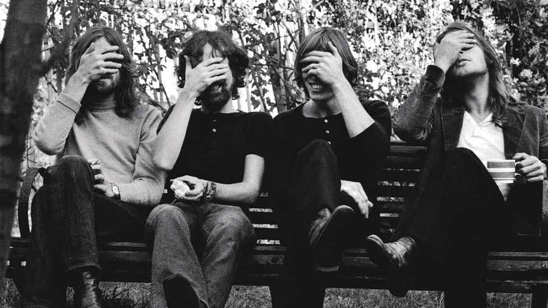

Fue una banda de rock británica, fundada en Londres en 1965. Considerada un icono cultural del siglo XX y una de las bandas más influyentes, exitosas y aclamadas en la historia de la música popular.
| Año | Disco |
|---|---|
| 1979 | Another brick in the wall |
| 1975 | Shine on your crazy diamond |
| 1979 | Confortably numb |
| "The endless river" fue su último disco | |